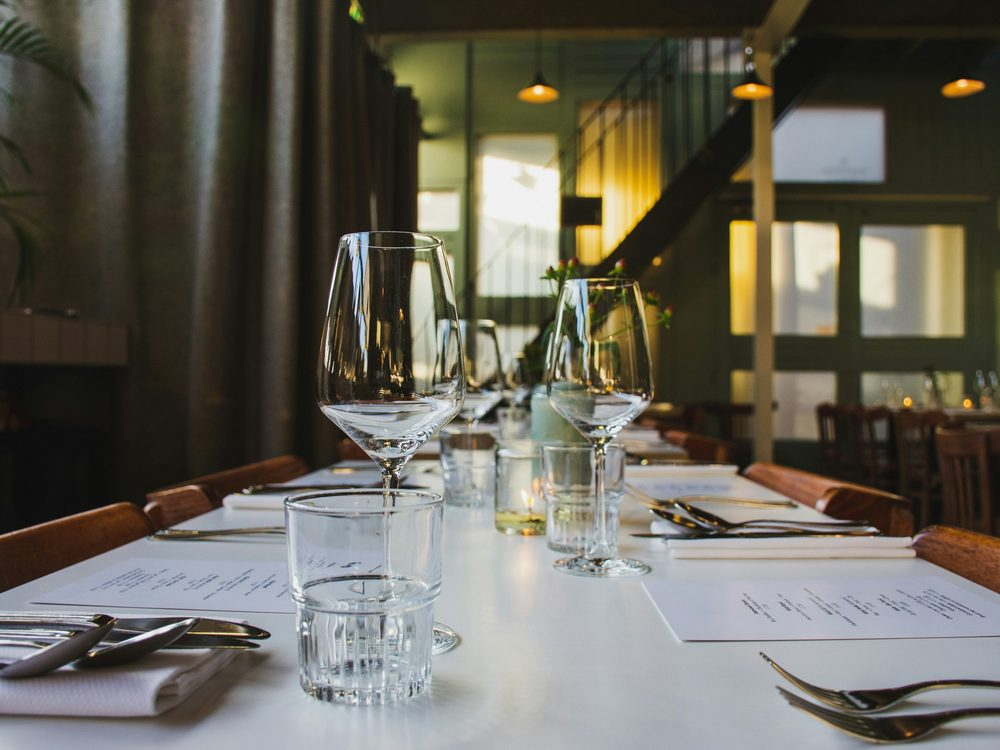
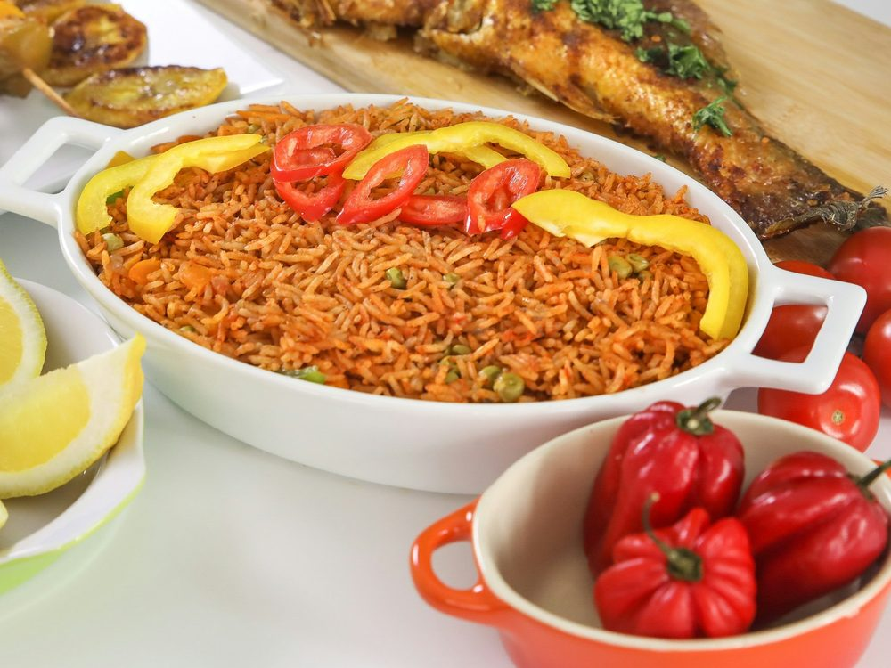
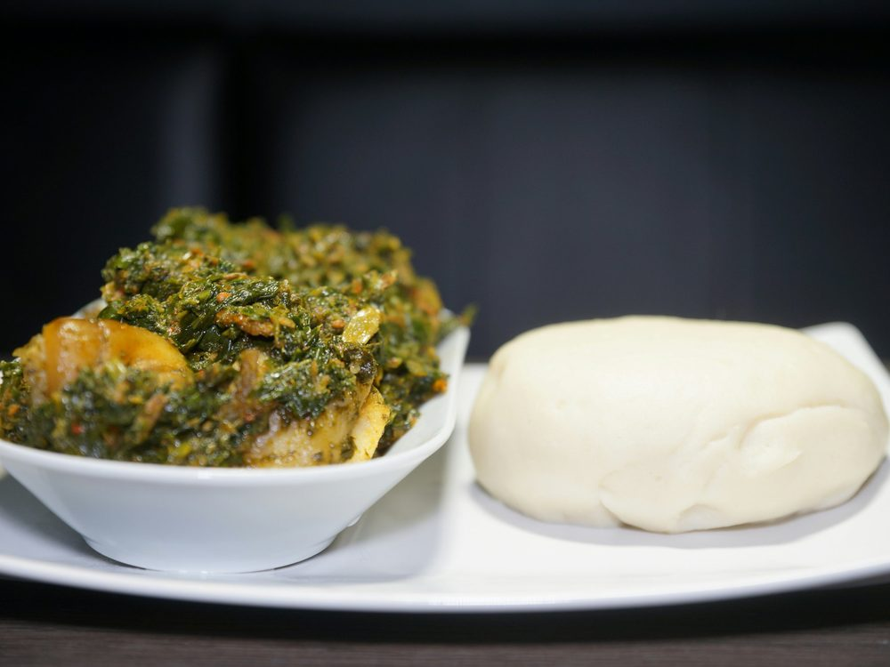
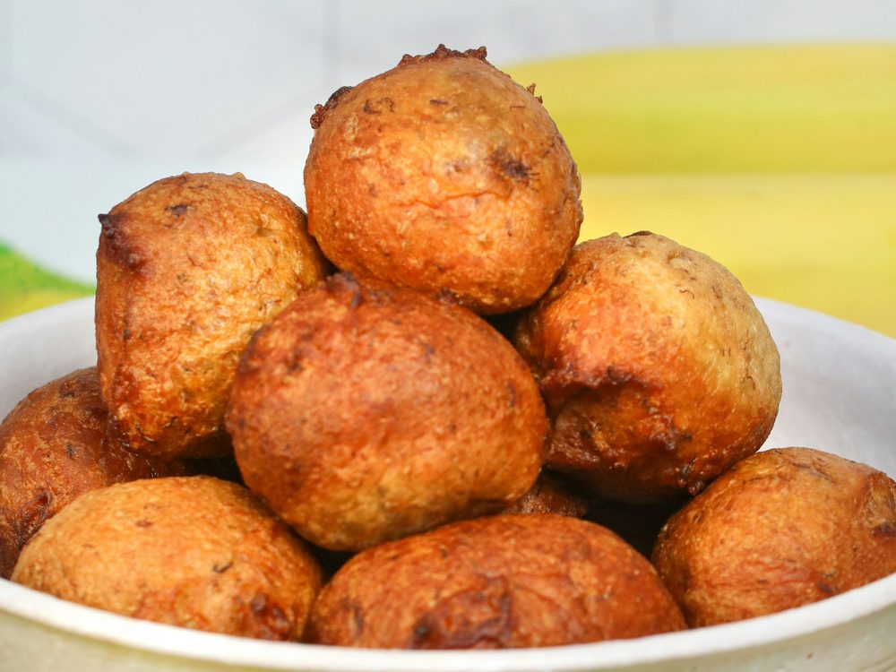

Our Mission
To serve delicious, affordable and wholesome meals that celebrate Nigerian cooking.

HMB Bites is a restaurant that prepares traditional Nigerian dishes with a modern, clean approach. We serve customers through dine-in, takeaway and event catering.
Founded in 2018 as a small food stall, HMB Bites grew through word of mouth. In 2022 we opened our first full restaurant, and today we serve hundreds of happy customers every week.
To serve delicious, affordable and wholesome meals that celebrate Nigerian cooking.
To become the most loved neighbourhood restaurant brand in Nigeria.


